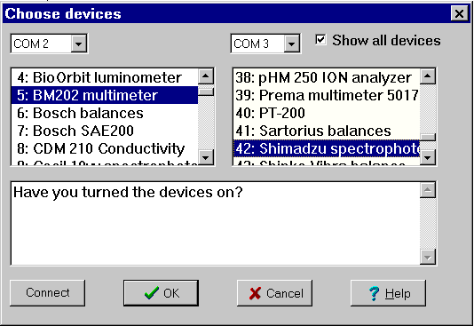

You can choose between more than 50 devices!

You will have to have two serial ports: COM1 , COM2, ...COM8.
Many PCs use a hardware mouse so that both ports are vacant, but if you don't, you will have to remove the mouse and make sure that the PC does not load a mouse driver when booting.
When you have chosen two devices, you can choose: